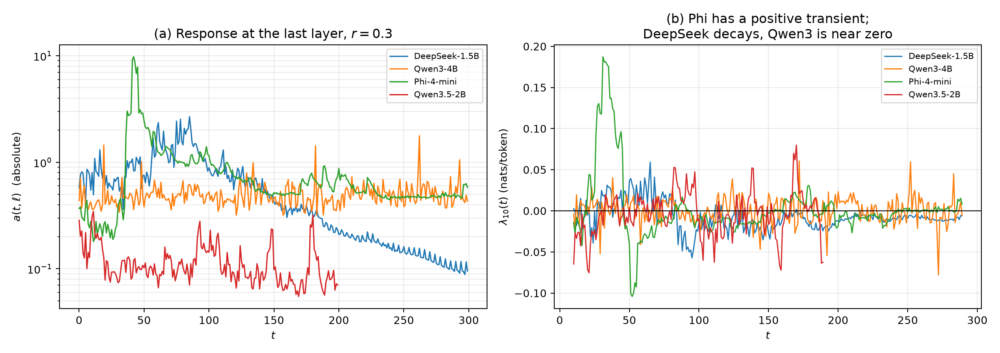
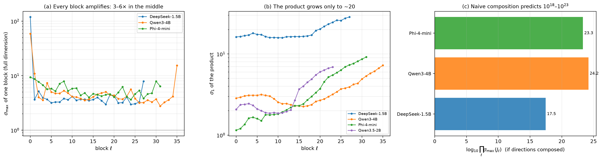
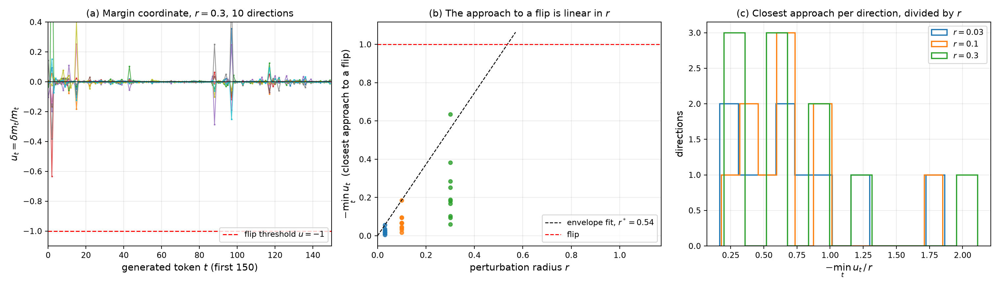
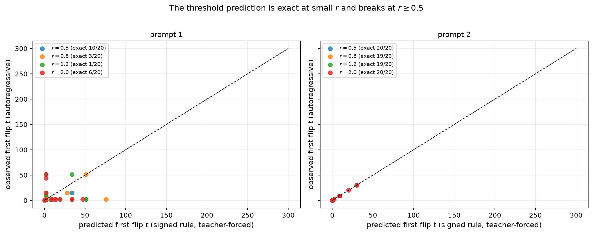
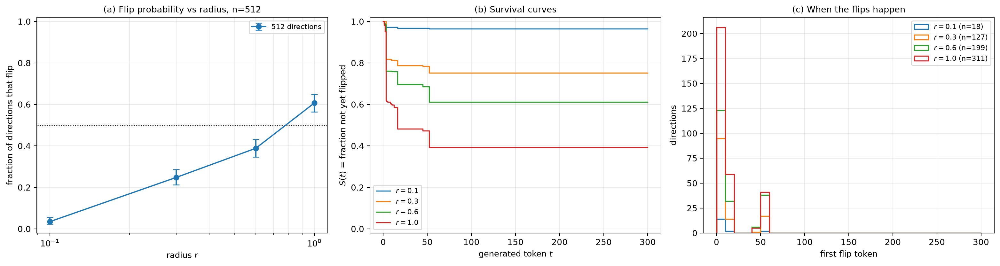
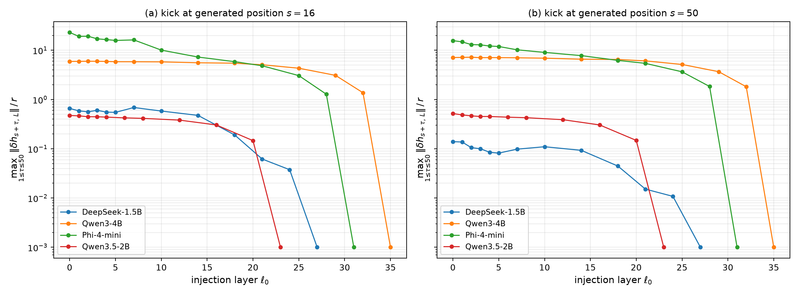
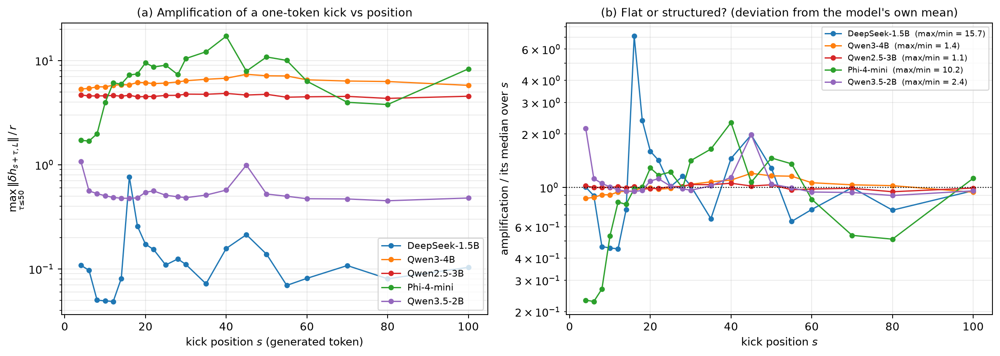
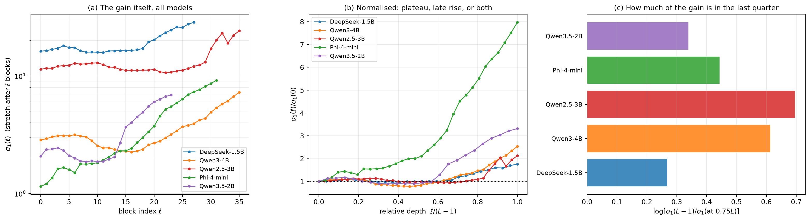

This file contains only the findings I would defend in a paper, with the numbers and the plots that
back them. It is deliberately shorter than notebook.md: that file is the lab notebook (everything
tried, including dead ends); this one is the claim set.
Everything below is measured on greedy decoding (temperature 0, no sampling) with open-weight models of 1.5–4.3 B parameters, on one T4.
This is the part that is easy to get wrong, so here it is with the tensor shapes.
The prompt is a matrix of embeddings $E\in\mathbb{R}^{P\times d}$ ($P$ positions, $d$ hidden dimensions; $P=15$–$65$, $d=1536$–$3072$). The perturbation is a matrix of the same shape, $r\,u$ with $u\in\mathbb{R}^{P\times d}$, $\|u\|_2=1$ over the whole $P\times d$ tensor:
$$E' = E + r\,u,\qquad \|u\|_2=1 .$$
In practice $u$ is sparse: we choose $K$ random entries of the flattened $P\cdot d$ tensor ($K=20$ in most runs, $K=1536$ in the "all directions" run) and fill them with an orthogonal set of signed patterns (a simplex). So a direction touches $K$ scattered (position, coordinate) pairs. The radius $r$ is the norm of the perturbation over the whole prompt, not per position. This is why $r=0.1$ is a small number even though the prompt has ten thousand coordinates: each nonzero entry is of order $r/\sqrt{K}$.
The generated positions are not perturbed. They start identical, and the difference appears only because attention reads the perturbed prompt.
A vector of length $d$ added to one hidden state, at one position and one layer:
$$h_{t,\ell}' = h_{t,\ell} + r\,v,\qquad v\in\mathbb{R}^{d},\ \|v\|_2=1 .$$
So: one $1\times d$ vector, added once. The "kick" experiments in §8 use this.
Everything is the Euclidean (L2) norm: $\|\delta h\|_2=\sqrt{\sum_i \delta h_i^2}$, and the radius $r=\|r u\|_2$ is Euclidean over the whole tensor. There is no cosine distance anywhere. Cosine appears only as a derived angle in two places (the fraction of the perturbation along the state, §4.3, and the alignment tests). The margin is a difference of two logits, a scalar.
| symbol | expression | what it is | why this and not something else |
|---|---|---|---|
| $\delta h_{t,\ell}$ | $h'_{t,\ell}-h_{t,\ell}$ | difference between perturbed and baseline state | the object everything is about |
| $\|\delta h_{t,\ell}\|$ | $\sqrt{\sum_i (\delta h_{t,\ell})_i^2}$ | absolute size | Euclidean because the model's own operations (residual sum, RMSNorm) are Euclidean |
| $\|\delta h_{t,\ell}\|/\|h_{t,\ell}\|$ | ratio of the two norms | relative size | the residual stream grows ×18–30 with depth by itself; the ratio removes that and is the only fair way to compare models |
| $g_\ell$ | $\|\delta h_{t,\ell}\|/\|\delta h_{t,\ell-1}\|$ | gain per block | the local growth factor |
| $\lambda_k(t)$ | $\frac{1}{2k}\log\frac{\|\delta h_{t+k}\|}{\|\delta h_{t-k}\|}$ | stretching rate, nats/token | finite-time Lyapunov exponent; local in time |
| $m_t$ | $z_{(1)}-z_{(2)}$ | gap between top two logits | the decision margin; a flip needs $m_t$ to reach 0 |
| $u_t$ | $\delta m_t/m_t$ | margin change in units of the margin | dimensionless; a flip is exactly $u_t<-1$ |
| $r_c(t,u)$ | $m_t/(|\delta m_t|/r)$ | radius at which the margin hits 0 at step $t$ | turns the margin into a distance in perturbation space |
| $r_*(u)$ | $\min_t r_c(t,u)$ | smallest radius that flips any token | one number per direction |
| $\sigma_i$ | singular values of a matrix | stretch factors of its principal directions | see below |
| $K(p,t)$ | $\|\delta h_{t,L}\|/r$ for a perturbation at prompt position $p$ only | transport kernel | the Green's function of the response (§7) |
Why singular values at all. A linear map $M$ stretches a vector $v$ by $\|Mv\|/\|v\|$, which depends on the direction of $v$. The singular values are the maximum and minimum of that ratio over all directions, and the $\sigma_i$ are the stretches of the principal directions. They are the natural summary of "how much can this map amplify anything". Two warnings that we learned the hard way: (a) $\sigma_1$ is a maximum over directions, so it is an upper bound for a specific perturbation, not its growth; (b) $\sigma_1$ of a product of matrices is not the product of the $\sigma_1$'s unless the principal directions line up — and here they do not (§4).
Why the depth exponent $\lambda_1(\ell)=\log\sigma_1(\ell)/(\ell+1)$ was a bad choice. It divides the log stretch by the number of blocks. That is the standard definition of a Lyapunov exponent, and it is right for a long chain, but for a 28-block profile it manufactures a $1/\ell$ decay: $\sigma_1$ is nearly constant, so $\log\sigma_1/(\ell+1)$ falls like $1/\ell$. That curve was reported as a finding in an earlier draft; it is not one (§10).
What is plotted. $\|\delta h_{t,\ell}\|/\|\delta h_{1,\ell}\|$ (median over directions) against the generated token $t$, log scale, one curve per layer, colour = layer depth. Prompt perturbation, $r=0.1$ ($r=0.3$ for Phi), 300 generated tokens.
What it shows. - DeepSeek: shallow layers (dark) fall by 4–6 orders of magnitude and reach exactly zero at the step where the sliding window removes the last perturbed token; deep layers (yellow) stay within a factor 2 of their initial value. - Qwen3-4B, Qwen3.5: flat, within a factor 2 for 300 tokens. - Phi-4-mini: a burst at $t\approx40$ (up to ×20 in the deep layers), then a plateau.
There is no exponential growth anywhere in this figure.

What is plotted. $\lambda_{10}(t)=\frac{1}{20}\log\frac{\|\delta h_{t+10,L}\|}{\|\delta h_{t-10,L}\|}$ at the last layer, $r=0.3$, for four models.
What it shows. DeepSeek is negative after $t\approx100$; the others fluctuate around zero. A positive value early in the continuation is a transient, not a rate.
Numbers (last layer, $r=0.3$, mean over $t>150$, same prompt for all models):
| model | layers | early $\lambda$ ($t<60$) | late $\lambda$ ($t>150$) |
|---|---|---|---|
| DeepSeek-1.5B | 28 | +0.0087 | −0.0105 |
| Qwen2.5-3B | 36 | −0.0007 | +0.0002 |
| Qwen3-4B | 36 | +0.0030 | +0.0003 |
| Phi-4-mini | 32 | +0.0347 | +0.0003 |
| Qwen3.5-2B | 24 | −0.0126 | −0.0014 |
A positive late rate means sustained exponential growth of the perturbation. None of the five models has one; the largest is +0.0003 nats/token, i.e. a factor 1.09 over 300 tokens.
A test that the measurement can see growth: the same pipeline applied to a synthetic expanding map
with a true rate of +0.035 recovers +0.035 (notebook, lambda_fig10_synthetic.png).
The network normalises the state's length before the logits (RMSNorm), so a perturbation along the state cannot change the output at all — it rescales all logits equally. The relevant part is the perpendicular one. Measured (DeepSeek, all depths and all radii):
$$\cos^2(\delta h,h)=0.006\quad\Rightarrow\quad 0.6\%\text{ of the energy is radial, }8\%\text{ of the amplitude.}$$
So the Euclidean norm $\|\delta h\|$ is a good proxy for the part that matters, but this is a measured fact, not a general one.

What is plotted. The same finite-time rate, extended to 4000 generated tokens (DeepSeek, several prompts; window 4096 so nothing is truncated). What it shows. The rate settles around −0.007 and does not cross zero; the perturbation decays to the numerical floor. The 300-token horizon used elsewhere is not hiding a late growth phase.
Caveat that matters. At $W=100$ (the default run) the prompt is truncated from token $t=W-P\approx35$, and the truncation itself produces a rise in the response. In a controlled same-token comparison the rise disappears for $W\ge150$. So the positive phase seen in some early figures is a window effect, not a property of the model. This is one of the corrections in §10.

What is plotted. Left: $\sigma_{\max}$ of one block's Jacobian at each depth, computed in the full dimension (power iteration, 20 iterations). Middle: $\sigma_1$ of the product of all blocks from the depth map. Right: what the product would be if each block's amplification composed, $\prod_\ell \sigma_{\max}(J_\ell)$.
Numbers.
| model | $\sigma_{\max}$ block 0 | middle blocks | last block | product $\sigma_1$ | if composed |
|---|---|---|---|---|---|
| DeepSeek-1.5B | 119 | 3.6 | 7.9 | ~20 | $10^{17.5}$ |
| Qwen3-4B | 59 | 4.1 | 15.4 | ~5 | $10^{24.2}$ |
| Phi-4-mini | 9.3 | 4.9 | 6.4 | ~9 | $10^{23.3}$ |
What it means. Every block has a direction it amplifies by 3–6×; the first block by 9–119×. But the amplified direction rotates from block to block: the average angle between consecutive top singular directions is 83.6°, and the product of 28 blocks grows by about 20, not by $10^{17}$. This is the reason a transformer does not blow up, and it is a measured property of the weights, not a definition.
The practical consequence. A random perturbation sees the small common gain, not the large one-off amplifications. This also explains why a random 8- or 64-dimensional probe of the tangent space reports a nearly flat spectrum: it almost never contains the one direction a block amplifies.

What is plotted. Panel (a): the same-position tangent chain (depth map, blue) and the real prompt-perturbation response (red, a1 run), both normalised at layer 1. Panel (b): a one-token kick at $s=16$, response at the same position vs at the next token. Panel (c): the same kick, 20 tokens later.
Numbers. From layer 1 to layer 27, the same-position chain grows ×1.54; the real response grows ×53. So ~89% of the depth growth is cross-position transport, which the same-position tangent cannot see.
Panel (c) is the model difference in one panel: 20 tokens after the kick, DeepSeek has decayed to ×0.67 while Phi has grown to ×9.2 and Qwen3-4B to ×5.9.

What is plotted. $u_t=\delta m_t/m_t$, the change of the top-two logit gap in units of that gap. At $r=0.3$, ten directions (left); the closest approach to $u=-1$ versus radius (middle); the distribution of $u$ at one step, divided by $r$ (right).
What it shows. A flip requires $u_t\le-1$ (the margin crosses zero). The rule predicts the first flip correctly in 318 of 320 direction-radius pairs at $r\le0.1$. The closest approach is linear in $r$; the smallest radius at which some direction flips is $r_*\approx0.5$ for that prompt.

What is plotted. Predicted first flip (signed margin rule) against the observed first flip in a free run, for radii 0.5–2.0.
What it shows. On one prompt the prediction is exact 20/20 even at $r=2$; on a fragile prompt it degrades to 1–6/20. The reason is visible in the response curve: at these radii the margin change no longer scales with $r$ (concave saturation), so the tangent prediction is extrapolating.

What is plotted. Fraction of 512 directions that change at least one token within 300 generated tokens, as a function of radius (left); survival curves, i.e. fraction not yet flipped (middle); distribution of the first flip time (right). DeepSeek, one prompt.
| radius | flips / 512 | fraction [95% CI] | flips after token 20 |
|---|---|---|---|
| 0.1 | 18 | 3.5% [2.2, 5.5] | 0.4% |
| 0.3 | 127 | 24.8% [21.3, 28.7] | 3.5% |
| 0.6 | 199 | 38.9% [34.7, 43.2] | 8.6% |
| 1.0 | 311 | 60.7% [56.4, 64.9] | 9.0% |
The important correction. 85–90% of all flips happen at one step where the margin is exactly zero (the top two logits are equal to within the precision of the forward pass). Any perturbation flips such a token; it is a quantisation tie, not a sensitivity. Removing it, the flip fraction at $r=0.1$ is 0.4%, not 3.5%. The last column is the number to quote.
Definition. Perturb one prompt position $p$ and measure the response at every generated token $t$:
$$K(p,t)=\frac{\|\delta h_{t,L}\|}{r}\quad\text{(perturbation at }p\text{ alone).}$$
It is a $P\times T$ matrix (65 positions × 300 tokens). The usual experiment, which perturbs all positions at once, is a sum of these: $$R(t)=\sum_p K(p,t)\,u_p .$$ So $K$ is the elementary response — the Green's function — and it says where each part of the response comes from.

What is plotted. Left: $\log_{10}K(p,t)$ at the last layer, one prompt, DeepSeek. The cyan line is the peak over $t$ for each $p$. Right: five rows of the same matrix.
Two components, both clearly visible. 1. A persistent background from the first ~5 prompt positions: they influence every generated token, decaying from ×27 to ×6 over 300 tokens. This is the component that survives at long distance. 2. A travelling front: for later positions the response peaks at a generated token that moves with $p$ (peak $t=21$ at $p=0$, $t=97$ at $p=64$, slope ≈1). A prompt token matters most to the continuation "opposite" it, and much less two hundred tokens later.
Why this is the most useful new object. It turns "the response" into two measurable profiles (background decay, front amplitude), it explains the 89% of depth growth that the same-position tangent misses, and it gives the model differences a place to live: Phi's far-field growth should appear as a slower-decaying background or a wider front. The 8-prompt × 5-model version is running.
A free check. Summing $K$ over all $p$ should reproduce the ordinary all-position response. If it does, the linear decomposition is validated. (Running.)

What is plotted. A one-token kick of norm $r$ at one generated position, injection at one block; the quantity is the largest downstream response at the last layer within 50 tokens, divided by $r$, against the injection block. Ten directions.
What it shows. The curve is flat over the first 60–75% of the depth: injecting at block 0 or block 20 gives the same downstream amplification. The response is a property of the position, not of the injection depth. The factor is model-specific: Phi ×23, Qwen3-4B ×6, DeepSeek ×0.7, Qwen3.5 ×0.5 in the original run (the consistent same-prompt table is below).

What is plotted. The same amplification against the kick position $s$ (22 positions, 5 models).
What it shows. Three models are flat — Qwen3-4B within ×1.4, Qwen2.5-3B within ×1.1, Qwen3.5 within ×2.4 — and two have hot spots: DeepSeek spikes at $s=16$ (×6 above its own median) and Phi rises to $s\approx40$ (×10 spread). The hot spots coincide with the burst times seen in the prompt-perturbation runs.
The consistent table (same prompt, same protocol; last layer, $r=0.3$, 20 directions; kick at $s=16$):
| model | layers | late $\lambda$ | direction spread (5–95%) | kick gain at $s=16$ | relative response at $t=50$ |
|---|---|---|---|---|---|
| DeepSeek-1.5B | 28 | −0.0105 | ×5.85 | 0.76 | $4.1\times10^{-4}$ |
| Qwen2.5-3B | 36 | +0.0002 | ×1.36 | 4.63 | $1.9\times10^{-3}$ |
| Qwen3-4B | 36 | +0.0003 | ×1.19 | 5.84 | $8.8\times10^{-4}$ |
| Phi-4-mini | 32 | +0.0003 | ×1.19 | 7.25 | $1.1\times10^{-2}$ |
| Qwen3.5-2B | 24 | −0.0014 | ×1.93 | 0.48 | $2.1\times10^{-3}$ |
Two things to take from this table. (i) Direction dependence is a DeepSeek property (×5.85); the newer models are close to isotropic (×1.2–1.9), so any statement about "the perturbation direction" must be checked per model. (ii) The ordering contract→amplify (DeepSeek 0.76, Qwen3.5 0.48 vs Qwen2.5 4.6, Qwen3 5.8, Phi 7.2) is the same ordering as the late rate (−0.0105, −0.0014 vs +0.0002, +0.0003, +0.0003). The two independent measurements agree on the ordering of five models.

What is plotted. The cumulative stretch $\sigma_1(\ell)$ of the depth product, per model (normalised in the middle panel).
What it shows. Two groups. The Qwen2-family models (DeepSeek, Qwen2.5) start at ×11–16 in the first block and then grow slowly; the newer models start at ×1.2–2.3 and grow gradually to ×2.6–7.5. This is an architectural difference, measured without any normalisation choice. It does not by itself explain the dynamics (Qwen2.5 front-loads but amplifies kicks like Qwen3), so I would not claim causation.

What is plotted. Left/middle: response at layer 1 for four window sizes, Qwen3-4B and Phi-4-mini. Right: measured time at which the response becomes exactly zero, against the prediction $t_1(W)+(\ell-1)(W-1)$.
What it shows. Imposing a window $W$ makes the response exactly zero from a predictable step:
$$t^*_\ell=(W-10)+(\ell-1)(W-1)\quad\text{(this prompt),}$$
and the first difference from an unwindowed run appears at $t=W-P$. Both are exact: 18 points, maximum residual 0.00, on two architectures. The mask we impose (a 4-D mask in the attention call) is bit-identical to DeepSeek's native sliding window at $W=100$ (all recorded arrays equal).
This is a methods result: it says what a sliding window does (a hard reset, not a soft decay), and it is the reason the early growth phase at $W=100$ is a truncation effect.
| quantity | why not |
|---|---|
| "$\lambda_1(\ell)$ decays exponentially with depth" | $\lambda_1=\log\sigma_1/(\ell+1)$ and $\sigma_1$ is nearly flat; the decay is the division by $\ell+1$. Plot $\sigma_1(\ell)$ instead. |
| "the depth tangent map is isotropic" | true only inside an 8/64-dimensional random subspace; the full Jacobian has $\sigma_{\max}$ 3–119 and rotates. |
| FSLE flat in $r$ | it is the statement that the response is linear in $r$; the value depends on the threshold and on where the clock starts. |
| "$r_*$ follows a log-logistic law" | tested on 4 models × 5 prompts × 512 directions: the median varies 15× and the exponent 2.3–17.6. A one-prompt description, not a law. |
| window spectroscopy (per-token contribution map) | it works, but it measures the mask, and the same information is in the transport kernel with a cleaner interpretation. |
| "the state is a 10-dimensional manifold" | the estimator is not stable under pooling and the last saved layer is the final RMSNorm; the only robust geometry number is the 99.4% tangential fraction. |
| positive growth phase at $t\approx60$ | exists only when $W=100$ truncates the prompt; absent for $W\ge150$ in a controlled comparison. |
On "stable chaos". The name is defensible only if it is defined in one sentence: the continuous state contracts, but the readout is discontinuous, so a shrinking perturbation can still change the token. If it is read as "chaos", a referee will ask for a positive Lyapunov exponent, and there is none. I would either define it explicitly every time or call it "sensitivity without stretching".
On the 300-token horizon. It is enough for the flip statistics (all gaps below 0.05 occur in the first 300 tokens), but the late rate keeps drifting slowly to 4000 tokens (−0.0075 at 1000, −0.0069 at 4000). For a claim about the asymptotic rate, the horizon must be stated.
On model breadth. Five models is not enough for "models differ". The table in §8 is consistent across two independent measurements, which is reassuring, but a claim about why needs at least two more architectures. I would spend the next compute there before adding more prompts to the five.
On the transport kernel. It is the most promising object in the project and the least explored: one prompt, one model so far. Everything about "where the response comes from" rests on it.
| what | where |
|---|---|
| raw protocol, all runs | notebook/notebook.md (lab notebook) |
| curve fitting tool | src/chaos_llm/curvefit.py, results/fits/SUMMARY.md |
| this table's numbers | results/master_table.json |
| transport kernel | results/transport/, scripts/analysis_transport.py |
| block Jacobians | results/block_sigma/, src/chaos_llm/run_block_sigma.py |
| flip statistics | results/hazard/, scripts/analysis_flip_fraction.py |
| figure gallery | results/figures/models/ (844 figures, INDEX.md) |